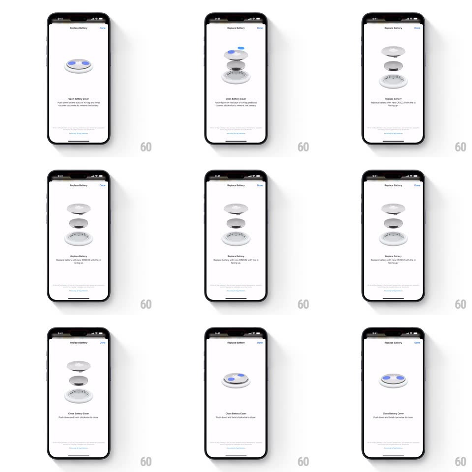

Media
Frame-by-frame

Rebuild this interaction 1:1: Apple Find My's "Replace Battery" guide - a looping 3D exploded view of an AirTag that separates into cover, battery, and shell with a twist gesture cue, then reassembles, stepping through Open / Replace / Close instructions.

Rebuild this interaction 1:1: Apple Find My's "Replace Battery" guide - a looping 3D exploded view of an AirTag that separates into cover, battery, and shell with a twist gesture cue, then reassembles, stepping through Open / Replace / Close instructions.
## Integration
Integration: stack-agnostic spec - springs given as stiffness/damping, timed motions as duration + curve; map every value to your framework and animation library of choice.
## Scene
White instruction sheet titled "Replace Battery" with a Done button top-right. Center: a photoreal 3D AirTag render. Below: a bold step title ("Open Battery Cover", "Replace Battery", "Close Battery Cover") with a one-line instruction and a progress bar along the bottom.
## Motion spec
Pattern: looping 3D exploded-view instruction sequence.
- Open: the AirTag's steel cover rotates counter-clockwise (~40deg) and lifts off; the stack separates vertically into cover, CR2032 battery (positive side up), and shell (each layer easing apart over ~600ms, staggered top-down, ~120ms apart).
- The exploded stack holds (~800ms) with a slow idle drift (whole model rotates a few degrees on Y).
- Replace: the battery lifts out of the shell, hovers, and a fresh battery drops in (translateY, 400ms, ease-in-out).
- Close: layers collapse back in reverse order (bottom-up stagger), the cover drops on and twists clockwise to lock (~300ms rotation).
- The step title and instruction crossfade at each stage change (200ms); the progress bar advances per stage.
## Calibration
- The twist is what sells it - the cover rotates as it lifts/seats, not a straight vertical pop.
- Layer stagger is top-down on explode, bottom-up on reassemble.
## Reduced motion
Three static renders (closed, exploded, closed) crossfade per step (250ms).
## Don't miss
- The battery's blue positive face is visible whenever the battery is exposed.
- Instruction copy changes with the animation stage - text and 3D must stay in sync.